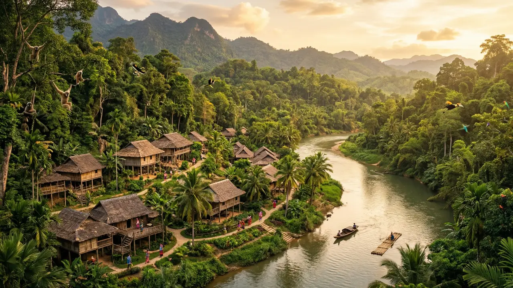
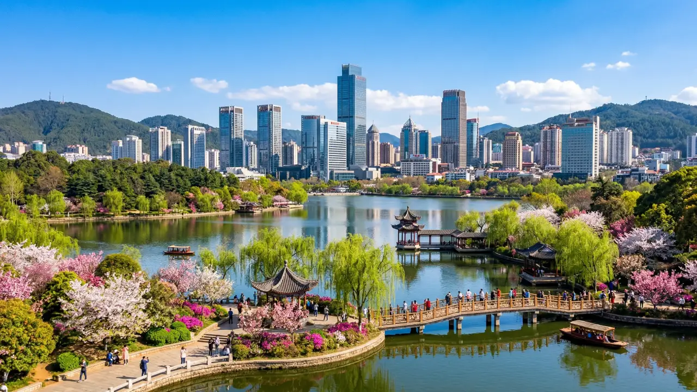

Dali
Una semana en Dali: el lago Erhai y los pueblos bai
Llegué a Dali sin esperar mucho y me fui completamente enamorado. El lago Erhai al amanecer es una de las vistas más impresionantes que viví en mi vida.
Miles de viajeros ya descubrieron Yunnan con Lucky Air. Leé sus experiencias, explorá sus fotos y compartí tu propia historia con una comunidad apasionada por Dali, Xishuangbanna y Kunming.
Compartí tu experienciaLas últimas historias compartidas por nuestra comunidad de viajeros.
Llegué a Dali sin esperar mucho y me fui completamente enamorado. El lago Erhai al amanecer es una de las vistas más impresionantes que viví en mi vida.

La selva tropical al sur de Yunnan no se parece a nada que haya visto antes. La diversidad cultural de los pueblos dai es increíble y el vuelo con Lucky Air fue puntual y muy cómodo.

Kunming merece más reconocimiento internacional. Su clima perfecto todo el año, el Parque de la Piedra Forestal y su gastronomía la convierten en una parada obligada en Yunnan.
Puntuaciones promedio según las valoraciones de nuestra comunidad de viajeros.
| Destino | Puntuación general | Recomendado para | Mejor temporada |
|---|---|---|---|
| Dali | 4.0 / 5 | Cultura, naturaleza y fotografía | Marzo a mayo (primavera) |
| Xishuangbanna | 5.0 / 5 | Naturaleza, selva y ecoturismo | Noviembre a febrero (seco) |
| Kunming | 4.2 / 5 | Ciudad, gastronomía y base de exploración | Todo el año (clima templado) |
| Lijiang | 4.5 / 5 | Historia, patrimonio y aventura | Abril a octubre (primavera-verano) |
| Shangri-La | 4.3 / 5 | Espiritualidad, trekking y montañas | Junio a septiembre (verano) |